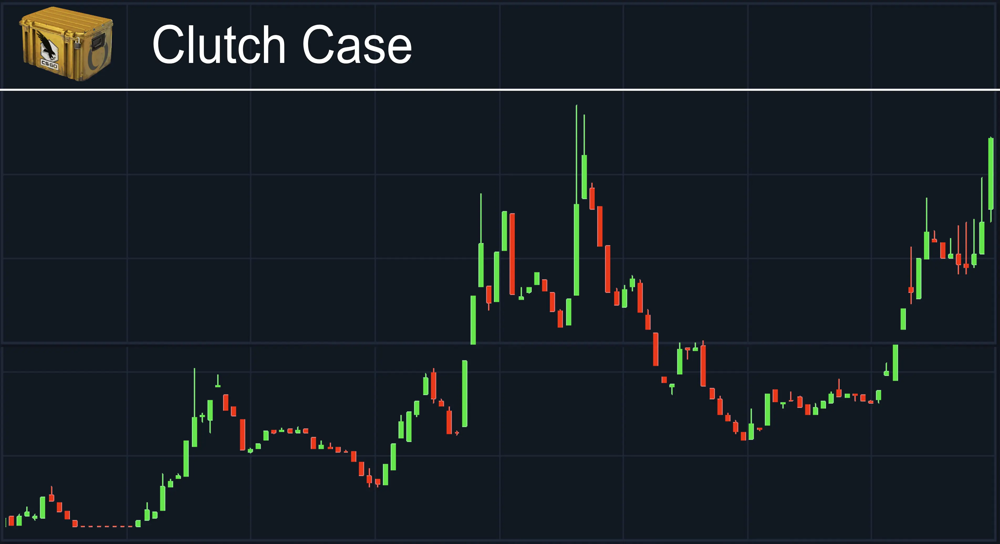

CS:GO Skin Investment Fundamentals
CS:GO skins represent a unique investment market with distinct patterns, opportunities, and risks. This page provides strategies for maximizing returns while minimizing potential losses.
Market Overview & Historical Performance
The CS:GO skin market has demonstrated consistent growth since its inception in 2013, with periodic cycles of expansion and correction. Major tournaments, game updates, and platform changes typically trigger significant price movements. Understanding these cycles is essential for timing market entries and exits.
Case Investment Strategy
Cases represent one of the most accessible investment vehicles in the CS:GO economy. When a case is removed from the active drop pool, its supply becomes finite while demand continues as long as the desirable skins inside remain popular. The Clutch Case chart above illustrates the typical value progression: initial oversupply and low prices, followed by steady appreciation after drop discontinuation.
Case Investment Factors
- Desirability of Contents: Cases containing popular knife finishes or coveted skins appreciate faster
- Drop Status: Cases in the rare drop pool appreciate faster than those in active rotation
- Storage Costs: Consider inventory space limitations when investing in large quantities
- Market Fee Impact: Factor in Steam's 15% transaction fee when calculating potential profits
Tournament Sticker Investments

Tournament stickers, particularly from Major Championships, follow a predictable price pattern. Available only during the three-week tournament period, supply becomes permanently fixed once the sale ends. Historically, tournament stickers have yielded some of the highest ROI percentages in the CS:GO investment sphere.
Sticker Investment Strategies
- Team Performance Analysis: Stickers from teams that disband or rarely qualify for majors often become more valuable due to scarcity
- Design Quality: Visually attractive stickers with unique effects (holo, foil) typically outperform standard versions
- Capsule vs. Individual: Capsules often provide better long-term returns than individual stickers due to the gambling element
- Historical Performance: Katowice 2014 stickers have seen >10,000% returns, though such extreme appreciation is unlikely for newer releases
Skin-Specific Investment Strategies
Operation-Exclusive Collections
Skins from limited-time Operations typically appreciate significantly once the operation concludes. The Cobblestone Collection (containing the AWP Dragon Lore) and Norse Collection (with the AWP Gungnir) exemplify this pattern.

Contraband Investments
The M4A4 Howl remains the only Contraband-tier skin in CS:GO history. Its unique status and guaranteed finite supply make it a blue-chip investment that has consistently appreciated over time.

Case Hardened Pattern Investing
High-tier Case Hardened blue patterns represent a specialized investment niche requiring specific pattern expertise but offering exceptional returns for rare variants.

Risk Management & Portfolio Diversification
Diversification Strategies
- Asset Class Diversification: Spread investments across cases, stickers, operation skins, and regular skins
- Price Point Diversification: Balance high-value items (knives, high-tier skins) with volume investments (cases, capsules)
- Time Horizon Planning: Structure portfolio to include short-term (3-6 months), medium-term (1-2 years), and long-term (3+ years) investments
Market Risk Factors
- Game Updates: Changes to gameplay or skin systems can dramatically affect prices
- Trading Restrictions: Valve has periodically implemented trading limitations that impact market liquidity
- Competition: Other games' skin markets may draw attention and investment away from CS:GO
- Economic Factors: Broader economic downturns typically reduce discretionary spending on virtual items
Trading Platform Comparison

Different trading platforms offer various advantages and disadvantages for investors. Understanding the fee structures, liquidity, and security features is essential for maximizing returns.
| Platform | Fees | Liquidity | Cashout Options | Best For |
|---|---|---|---|---|
| Steam Market | 15% | Very High | Steam Wallet Only | Quick Sales, Small Investments |
| Third-Party Sites | 2-5% | High | Multiple Options | Larger Investments, Cash Extraction |
| Peer-to-Peer | 0% | Low | Direct | High-Value Items, Established Traders |